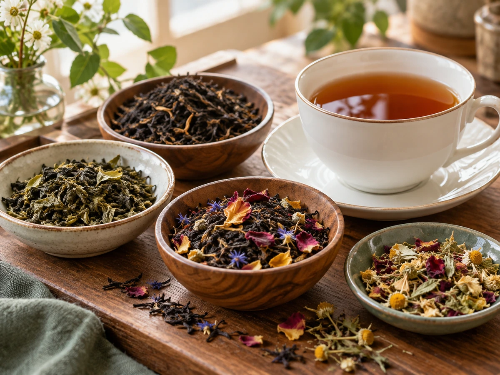

CONCEPT
世界のお茶とコーヒーを、
ひとつのお店に
まめまめハウスは、珈琲豆・紅茶・ハーブティー・中国茶の専門店です。 コーヒー豆は量り売り。健康茶や、輸入のお菓子も並びます。 お店では、お客様の「美と健康」を大切にしてきたと紹介されています。
50 × 100 × 100
コーヒー豆が約50種類、紅茶が100種類以上、ハーブティーも100種類以上。来店された方は「種類多すぎ！ まるで世界一周お茶ツアー」と書かれていました。
選びきれないほどの品ぞろえですが、ひとりで迷わなくて大丈夫です。来店された方は、こう書かれていました。
店長さん優しすぎ！淹れ方＆選び方を丁寧にレクチャーしてくれて感激…！ 公開されている来店者の感想より
迷う楽しさと、選ぶ手伝いの両方があるお店です。
